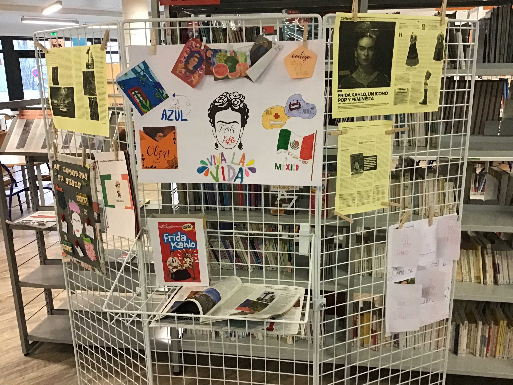

Actualités
Expositions⚓︎
Expositions du moment à découvrir au CDI.
Frida KAHLO
 Exposition sur Frida Kahlo réalisée par les élèves du cours d'Espagnol.
Pour aller plus loin : Frida Kahlo - France Culture
Projets franco-allemand

A découvrir,
L'Exposition sur le thème des relations franco-allemande, "ennemis bien-aimés" (en lien avec l'Axe du programme : Identité et échanges) réalisée par les deux groupes de germanistes de Terminale générale et STMG.
Rappel des grandes dates de cette relation un peu tendue qui a fini par se normaliser, grâce au couple De Gaulle - Adenauer.
A l’occasion de ce travail, les élèves ont lu un extrait du roman célèbre de Erich Maria Remarque "A l'Ouest, rien de nouveau" (1929), ainsi que le récit d'un amour franco-allemand (article extrait de "der Spiegel").
Cette exposition vise à faire connaître l'amitié franco-allemande et les projets et institutions qui en découlent.
Pour aller plus loin : Sources bibliographiques
Visible au CDI jusqu'à fin mars
Nouveautés⚓︎
Presse⚓︎


Le kiosque du mois dernier


Pour les enseignants

Kiosque ONISEP⚓︎
Dans la presse


Dernières publications ONISEP
Coups de coeur  ⚓︎
⚓︎
Informations à venir...